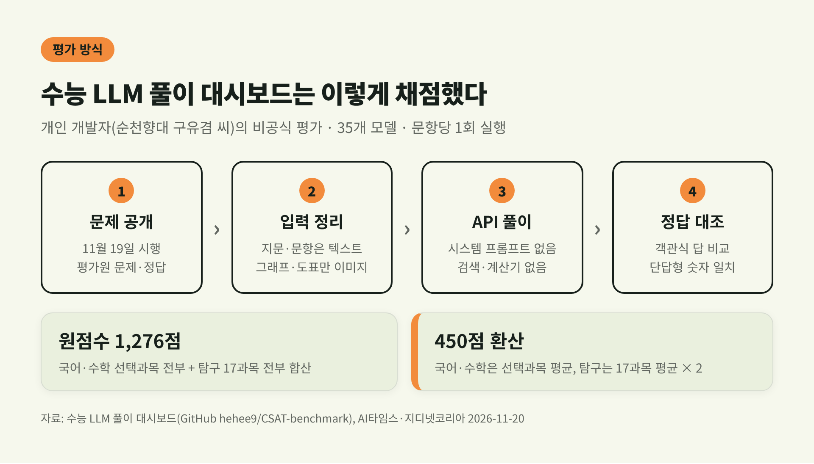
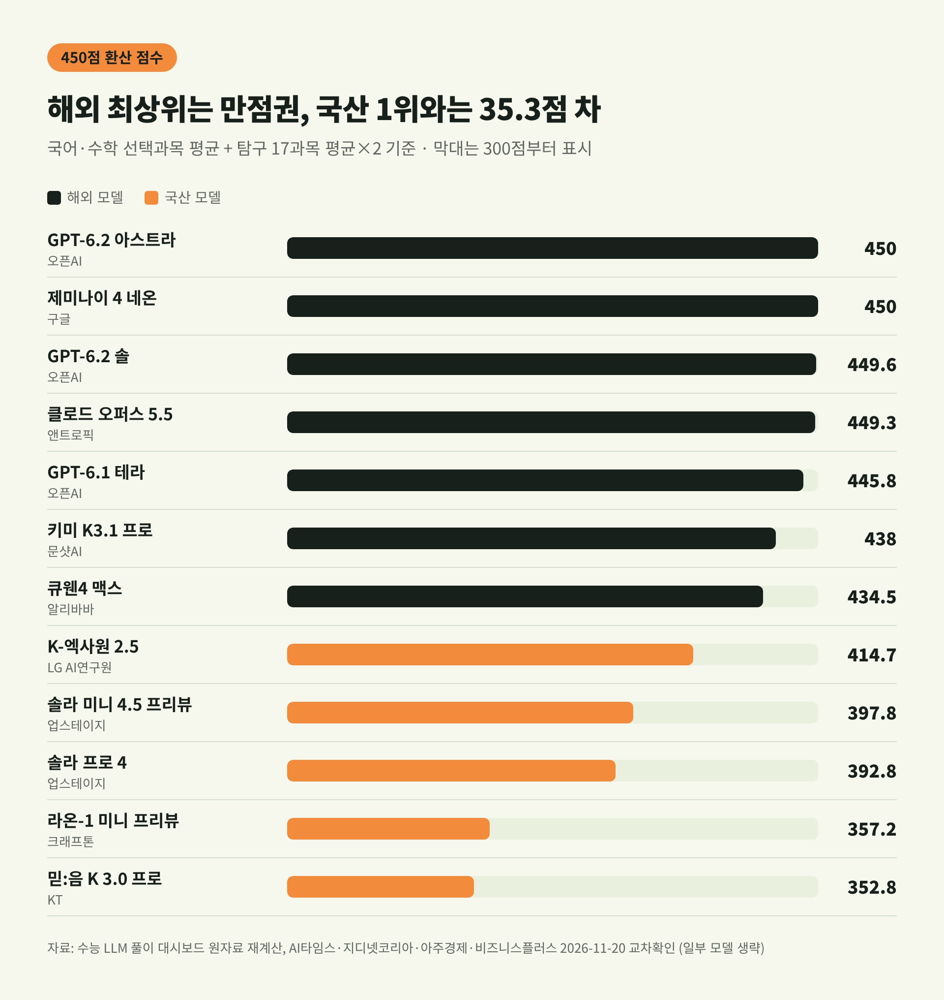
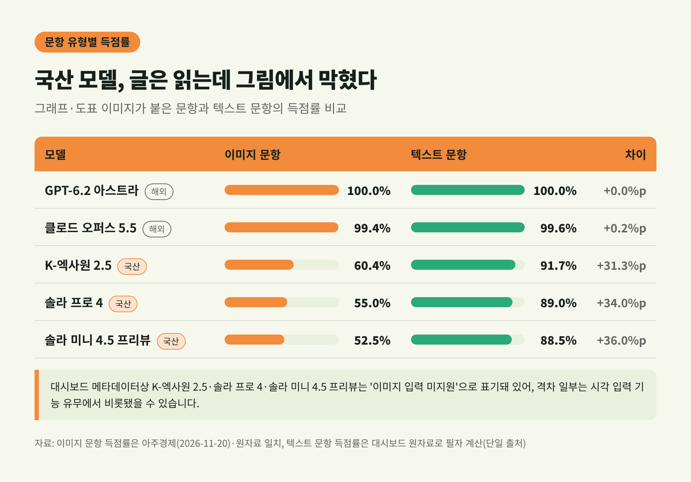
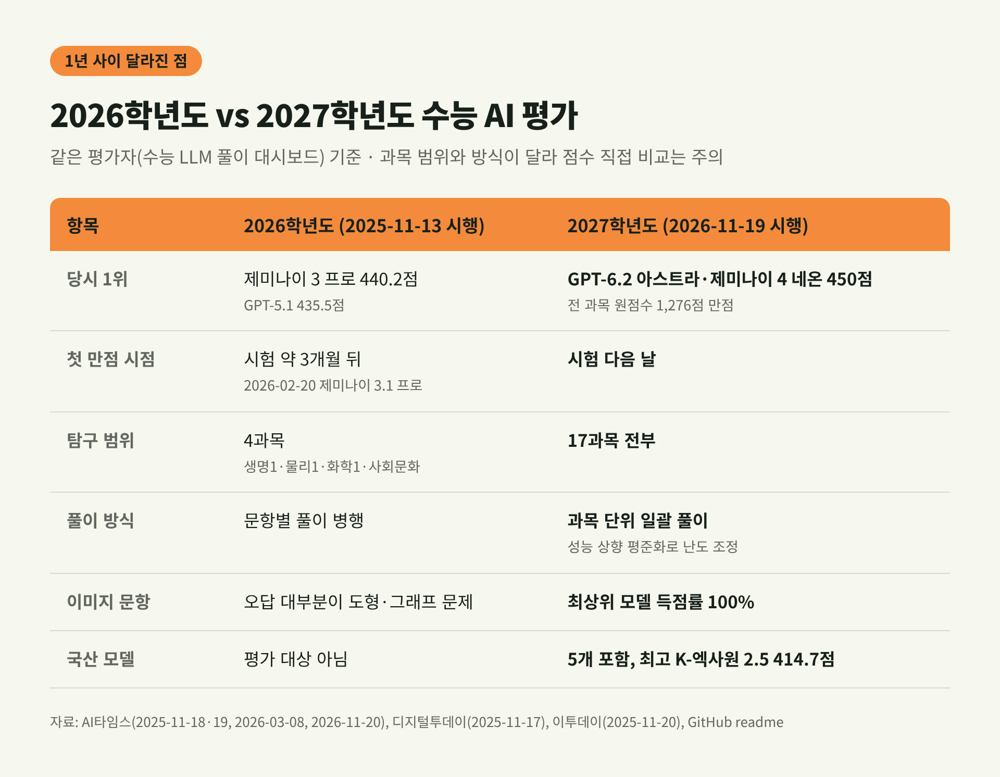
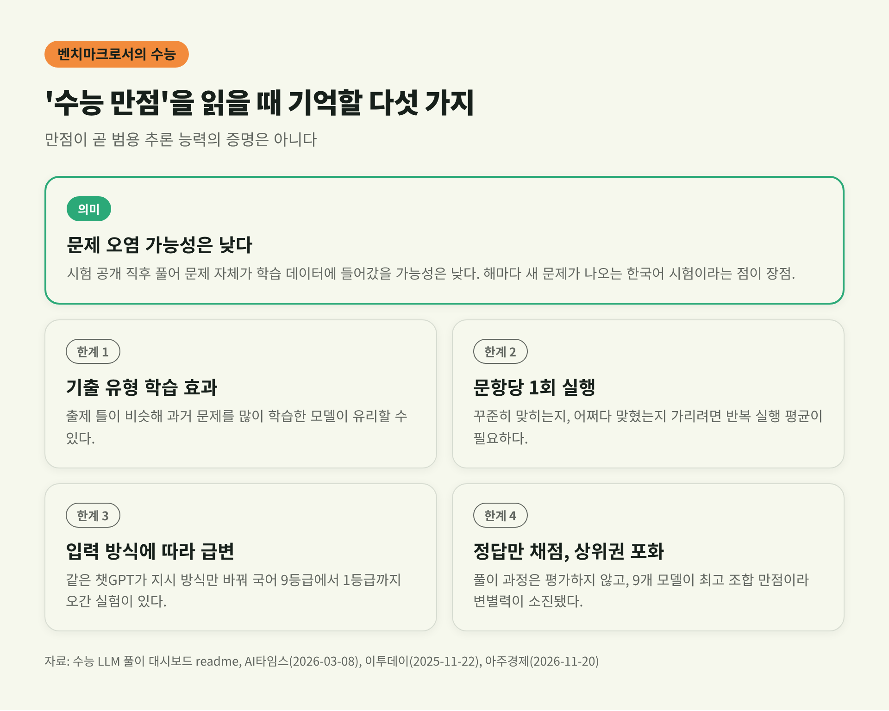

2027 수능 AI 평가에서 GPT·제미나이 만점, 국산 1위 엑사원은 35점 차

이번 글에서는 2027학년도 수능 문제를 AI 모델 35개에 풀게 한 평가 결과를 정리해 보겠습니다. 누가 어떤 방식으로 채점했는지, 국산 모델과 해외 모델의 격차는 어디서 벌어졌는지, 그리고 '만점'이라는 숫자를 어디까지 믿어야 하는지를 차례로 짚습니다.
세 줄 요약
- 오픈AI 'GPT-6.2 아스트라'와 구글 '제미나이 4 네온'이 수능 시행 다음 날 450점 환산 만점, 탐구 17과목까지 전 과목 원점수 만점을 기록했습니다.
- 국산 1위는 LG AI연구원 'K-엑사원 2.5'(414.7점)로, 최상위와 약 35점 차이입니다. 격차는 그래프·도표가 들어간 이미지 문항과 탐구 영역에서 크게 벌어졌습니다.
- 다만 개인 개발자의 비공식 평가이고 문항당 1회 실행이라, 순위를 모델의 '추론 능력 서열'로 읽기에는 한계가 있습니다.
■ 무슨 일이 있었나 — 시험 다음 날 나온 'AI 수능 성적표'
2027학년도 수능은 11월 19일 치러졌습니다. 한국교육과정평가원이 문제와 정답을 공개하자, 곧바로 국내외 AI 모델의 풀이 결과가 올라왔습니다.
평가를 맡은 곳은 기관이 아닙니다. 순천향대 컴퓨터소프트웨어공학과 구유겸 씨가 개인적으로 운영하는 '수능 LLM 풀이 대시보드'입니다. 2024년부터 해마다 같은 작업을 해 왔고, 코드와 채점 데이터도 깃허브에 공개하고 있습니다.
방식은 비교적 단순합니다. 각 모델의 공식 API로 문제를 보내고, 시스템 프롬프트나 검색·계산기 같은 외부 도구는 주지 않았습니다. 문제는 텍스트로 바꿔 넣고, 그래프·도표·그림만 따로 잘라 이미지로 붙였습니다. 한 과목의 문제를 한 번에 몰아서 풀게 하는 방식입니다.
점수는 두 가지로 냈습니다. 하나는 국어·수학 선택과목과 탐구 17과목을 모두 더한 원점수 1,276점 만점입니다. 다른 하나는 수험생처럼 환산한 450점 만점으로, 국어·수학은 선택과목 평균, 탐구는 17과목 평균의 두 배를 반영합니다.

■ 결과 — 만점 둘, 최고 조합 만점 아홉
450점 환산에서 만점은 GPT-6.2 아스트라와 제미나이 4 네온 두 모델입니다. 두 모델은 탐구 17과목까지 하나도 틀리지 않아 원점수 1,276점도 모두 채웠습니다. 이 결과는 AI타임스·지디넷코리아·아주경제·비즈니스플러스 보도와 공개 원자료가 모두 일치합니다.
그 뒤는 거의 붙어 있습니다. GPT-6.2 솔과 제미나이 4 아르곤이 449.6점, 앤트로픽의 클로드 오퍼스 5.5와 클로드 페이블 5.2가 449.3점입니다. GPT-6.1 테라가 445.8점, 클로드 소네트 5.5가 442점으로 뒤를 이었습니다.
일부 보도에서 '만점 모델 9개'라는 숫자가 나온 것은 기준이 달라서입니다. 선택과목 중 가장 잘 본 과목, 탐구 중 가장 잘 본 두 과목을 고르는 '최고 조합' 기준으로는 9개 모델이 450점입니다. 국어·수학·영어·한국사 네 영역 원점수(426점)만 놓고 봐도 같은 9개 모델이 만점입니다. 결국 최상위권에서는 탐구 몇 문항이 순위를 가른 셈입니다.
중국 모델도 가깝습니다. 문샷AI 키미 K3.1 프로 438점, 알리바바 큐웬4 맥스 434.5점, 딥시크 V4.1 플래시 432.7점입니다. AI타임스는 전 과목을 푸는 데 든 비용이 가장 낮은 모델로 GPT-6.1 테라(1,171원)를, 가장 빠른 모델로 GPT-6.2 솔(약 48분)을 꼽았습니다. 이 비용·속도 수치는 AI타임스 단독 보도입니다.
국산 모델은 다섯 개가 올랐습니다. LG AI연구원 K-엑사원 2.5가 414.7점으로 가장 높았고, 업스테이지 솔라 미니 4.5 프리뷰 397.8점, 솔라 프로 4 392.8점, 크래프톤 라온-1 미니 프리뷰 357.2점, KT 믿:음 K 3.0 프로 352.8점 순입니다. K-엑사원 2.5는 수학과 한국사에서 만점을 받았고 국어 98점, 영어 96점이었습니다. 발목을 잡은 것은 탐구로, 환산 점수가 70.7점에 그쳤습니다.

■ 왜 중요한가 — 격차는 '그림 읽기'에서 벌어졌다
국산 1위와 최상위의 차이는 약 35점입니다. 그런데 이 격차가 어디서 생겼는지 뜯어보면 해석이 조금 달라집니다.
아주경제가 대시보드 데이터를 분석한 바에 따르면, 그래프나 도표가 붙은 이미지 문항 득점률은 GPT-6.2 아스트라·제미나이 4 네온·GPT-6.2 솔이 100%, 클로드 오퍼스 5.5와 페이블 5.2가 99.4%였습니다. 같은 문항에서 K-엑사원 2.5는 60.4%, 솔라 미니 4.5 프리뷰는 52.5%에 머물렀습니다.
반대로 이미지가 없는 문항만 따로 계산하면 그림이 달라집니다. 공개 원자료로 직접 계산해 보니 K-엑사원 2.5는 91.7%, 솔라 프로 4는 89.0%, 솔라 미니 4.5 프리뷰는 88.5%였습니다. 텍스트 문항과 이미지 문항 사이에 30%포인트가 넘는 차이가 있다는 뜻입니다. (필자가 원자료로 계산한 값이며, 별도 보도로 교차확인되지는 않았습니다.)
눈여겨볼 대목이 하나 더 있습니다. 대시보드 메타데이터에는 K-엑사원 2.5, 솔라 미니 4.5 프리뷰, 솔라 프로 4, 라온-1 미니 프리뷰가 '이미지 입력 미지원'으로 표시돼 있습니다. 지디넷코리아도 모델마다 이미지 입력 지원 여부가 달라 결과에 차이가 있을 수 있다고 짚었습니다. 그렇다면 이미지 문항의 격차 상당 부분은 '추론을 못 해서'라기보다 '그림을 볼 수 없어서'였을 가능성이 있습니다. 물론 이것도 시각 기능이 곧 경쟁력이라는 점에서는 분명한 약점입니다.

고려대 AI연구원 최병호 연구교수는 아주경제에 격차의 원인으로 모델 규모와 추론 단계의 컴퓨팅 인프라 차이를 들었습니다. 이미지 문항은 문자 인식을 거친 뒤에야 추론이 가능하고, 빅테크는 과거 기출 자료를 학습했을 수 있지만 국내 기업은 그렇지 못했을 수 있다는 설명도 덧붙였습니다.
■ 1년 사이 무엇이 달라졌나
작년 2026학년도 수능(2025년 11월 13일 시행) 때도 같은 평가가 있었습니다. 당시에는 GPT-5.1이 435.5점, 이어 나온 제미나이 3 프로가 440.2점으로 1위였습니다. 탐구는 생명1·물리1·화학1·사회문화 네 과목만 다뤘는데도 만점은 없었습니다. 오답 대부분은 복잡한 도형과 그래프 문제에서 나왔습니다.
작년 시험의 첫 만점은 시험 석 달 뒤인 2026년 2월 20일, 제미나이 3.1 프로가 기록했습니다. 올해는 시험 다음 날 만점이 나왔습니다. 탐구도 4과목에서 17과목 전부로 늘었고, 문항을 하나씩 주던 방식도 과목 단위로 한꺼번에 주는 더 까다로운 방식으로 바뀌었습니다.
구 씨는 AI타임스에 "재작년 수능 때는 평균 2~3등급, 작년에는 1등급으로 만점이 어려웠지만 올해는 모든 선택과목에서도 만점이 나왔다"고 말했습니다.
국산 모델의 등장도 변화입니다. 작년 이 평가에는 국산 모델 점수가 없었습니다. 작년 12월 서강대 김종락 교수팀이 수능 고난도 수학 등 50문항으로 따로 시험했을 때는 제미나이 3 프로가 92%를 맞힌 반면, 국산 모델은 업스테이지 솔라 프로 2가 58%였고 나머지는 대부분 20%대였습니다. 문항 구성이 달라 단순 비교는 어렵습니다만, 올해 국산 모델 다섯 개가 모두 수학에서 95점 이상을 받은 것은 눈에 띄는 진전입니다.

■ '만점'을 어디까지 믿어야 하나
이 평가의 가장 큰 장점은 시점입니다. 시험이 공개된 뒤 바로 풀었기 때문에 문제 자체가 학습 데이터에 들어갔을 가능성은 낮습니다. 예컨대 GPT-6.2 아스트라의 지식 기준 시점은 2026년 5월로 표기돼 있습니다. 해마다 새 문제가 나오는, 오염되지 않은 한국어 시험이라는 점에서 벤치마크로서 가치가 있습니다.
하지만 한계도 뚜렷합니다.
첫째, 기출 유형까지 피할 수는 없습니다. 수능은 출제 틀이 해마다 비슷하고, 과거 문제를 많이 학습한 모델일수록 유리할 수 있습니다.
둘째, 문항당 한 번만 풀었습니다. 구 씨 스스로도 지난 3월 인터뷰에서 꾸준히 맞히는지, 어쩌다 맞혔는지 가리려면 반복 실행이 필요하다고 밝혔습니다.
셋째, 입력 방식이 결과를 크게 흔듭니다. 작년 진학사 블랙라벨 실험에서는 같은 챗GPT가 시험지 이미지를 통째로 받고 정답만 내라고 하자 국어 8점(9등급), 단계별 풀이와 근거를 요구하자 95점(1등급)을 받았습니다. 이번 평가는 사람이 텍스트를 다듬고 그림을 잘라 준 '정리된 입력'입니다. 평가자도 일반 앱 환경과 결과가 다를 수 있다고 명시했습니다.
넷째, 정답만 채점합니다. 풀이 과정이 타당했는지는 따지지 않습니다. 450점 환산 역시 실제 성적표의 표준점수와는 다른 자체 기준입니다.
다섯째, 최상위가 이미 포화됐습니다. 9개 모델이 최고 조합 만점을 받은 시험은 더 이상 최상위 모델을 가려내지 못합니다. 수능 만점이 곧 범용 추론 능력의 증명은 아니라는 점을 기억해 둘 필요가 있습니다.

■ 교육계와 산업계, 각자의 숙제
교육계에는 불편한 질문이 던져졌습니다. 전자신문은 수능 전날 보도에서, 충남대 연구실이 작년 수능 수학을 시험지 공개 두 시간 안에 AI 24개로 풀게 한 결과를 전했습니다. GPT-5 코덱스는 46문항을 모두 72분 만에 맞혔습니다. 변순용 서울교대 교수는 AI가 시험지를 읽지 못하게 하는 기술적 대응과 함께 논·서술형 평가 확대를 제안했습니다. 이민석 국민대 교수는 AI가 대신할 수 있는 객관식 '정답 맞히기' 시험에서 벗어나야 한다고 주장했습니다.
부정행위 우려도 현실적입니다. 올해 정부는 시험장 스마트기기 점검을 지시했고, 시험 당일 긴급재난문자도 세 차례 보냈습니다. 세무사 시험 수석의 AI 부정행위 자백, 법학적성시험(LEET) 만점자의 AI 부정 의심 수사도 같은 맥락에서 거론됩니다.
산업계의 숙제는 소버린 AI입니다. LG AI연구원과 업스테이지는 과기정통부의 '독자 AI 파운데이션 모델' 사업에 참여하고 있습니다. 지난 8월 2차 평가에서 LG AI연구원·SK텔레콤·업스테이지가 통과했고, 연말에 최종 2개 팀이 가려집니다. 이번 수능 대시보드에는 SK텔레콤 모델이 포함되지 않아 세 팀을 나란히 비교할 수는 없습니다. 또 이 결과는 정부 공식 평가와 무관한 개인 벤치마크라는 점도 함께 봐야 합니다.
가격 대비 성능 경쟁도 거셉니다. 최고 수준 모델이 전 과목을 1천 원대에 풀고, 무료·오픈웨이트 모델 여럿이 420점을 넘겼습니다. 국산 모델이 '한국어를 잘한다'는 것만으로는 차별화가 어려워진 환경입니다. 국내 업계는 산업·업무용 특화를 강조해 왔지만, 시각 정보를 읽고 추론하는 멀티모달 역량은 산업 현장에서도 필요한 기능입니다.
■ 앞으로의 전망
단기적으로는 세 가지를 지켜볼 만합니다.
하나는 대시보드 자체의 변화입니다. 최상위가 포화된 만큼 반복 실행 평균, PDF 통째 입력처럼 더 어려운 조건이 도입될 가능성이 있습니다. 구 씨는 이미 3~5회 평균과 전체 PDF 입력을 검토하겠다고 밝힌 바 있습니다.
둘은 국산 모델의 멀티모달 대응입니다. 텍스트 문항 성적만 보면 격차는 생각보다 좁습니다. 시각 입력을 갖춘 다음 버전이 나오면 점수 차가 얼마나 줄어드는지가 실질적인 시험대가 될 것입니다.
셋은 연말 독자 AI 파운데이션 모델 최종 선정입니다. 수능 점수가 평가 항목은 아니지만, 국민이 체감하는 'AI 성적표'로 계속 소환될 것입니다.
정리하면 이렇습니다. AI가 수능을 하루 만에 만점으로 푸는 시대가 됐지만, 그 숫자는 모델의 전부를 말해 주지 않습니다. 국산 모델의 35점 격차 역시 '실력 차'와 '기능 차'가 섞여 있습니다.
— 점수표의 맨 윗줄보다, 점수가 어디서 갈렸는지를 읽는 쪽이 더 많은 것을 알려 줍니다.
내년 수능에서도 같은 평가가 나온다면, 그때는 순위보다 이미지 문항 칸을 먼저 보시길 권합니다.
참고자료
- AI타임스, "'GPT-6.2 아스트라'·'제미나이 4 네온', 수능 만점…국산 1위는 LG" (2026-11-20) https://www.aitimes.com/news/articleView.html?idxno=217604
- 지디넷코리아, "AI로 수능 풀었더니…GPT·제미나이 '만점', 한국 모델은" (2026-11-20) https://zdnet.co.kr/view/?no=20261120133113
- 아주경제, "GPT·제미나이 수능 만점…K-AI는 이미지 문항서 취약" (2026-11-20) https://www.ajunews.com/view/20261120093531100
- 아주경제, "AI에 2027학년도 수능 풀게 했더니…28개 중 9개 모델 '4개 영역 만점'" (2026-11-20) https://www.ajunews.com/view/20261120075935771
- 비즈니스플러스, "'AI도 2027 수능 풀었다' 오픈AI·구글 만점…국산 1위는 'K-엑사원'" (2026-11-20) https://www.businessplus.kr/news/articleView.html?idxno=120222
- 파이낸셜뉴스, "'수능 풀어서 정답 알려줘' 챗GPT 시키자…3분 만에 국·영·수 풀어 '만점'" (2026-11-20) https://www.fnnews.com/news/202611200732347264
- 수능 LLM 풀이 대시보드 https://hehee9.github.io/CSAT-benchmark/ / 원자료 https://github.com/hehee9/CSAT-benchmark (2026-11-20 확인)
- 전자신문, "1년 전 챗GPT, 수능 수학 만점…'국가 교육·시험체계 개편해야'" (2026-11-18) https://www.etnews.com/20261118000364
- AI타임스, "GPT-5가 올해 수능 435.5점 기록...AI 중 가장 뛰어나" (2025-11-18) https://www.aitimes.com/news/articleView.html?idxno=204062
- AI타임스, "제미나이 3로 2026 수능 풀어보니…GPT-5.1 누르고 압도적 1위" (2025-11-19) https://www.aitimes.com/news/articleView.html?idxno=204103
- AI타임스, "제미나이 이어 GPT도 '수능 만점'...구유겸 학생 'AI 발전 놀라워'" (2026-03-08) https://www.aitimes.com/news/articleView.html?idxno=207681
- 디지털투데이, "수능 AI 대결, 최신 모델 몇 점 받았나 보니…GPT-5.1 '왕좌' 등극" (2025-11-17) https://www.digitaltoday.co.kr/news/articleView.html?idxno=605315
- 이투데이, "AI 지시만 바꾸자 수능 국어 점수 9→1등급…" (2025-11-22) https://www.etoday.co.kr/news/view/2528216
- 중앙일보, "수능, AI에 풀게 했더니…구글 제미나이 92점, 국내AI 20점대 [팩플]" (2025-12-15) https://v.daum.net/v/20251215190939658
- 디지털데일리, "독파모 2차 평가 탈락 '모티프'…업스테이지·SKT·LG '3파전'" (2026-08-18) https://www.ddaily.co.kr/page/view/2026081811112476409
- 미주헤럴드경제, "'국가대표 AI' LG·SK텔레콤·업스테이지 '통과'…모티프 '탈락'" (2026-08-17) https://www.heraldk.com/article/2026081719262444509